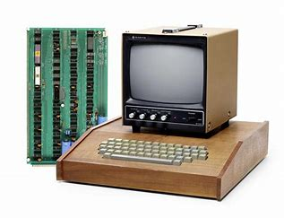
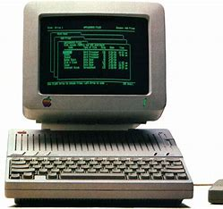
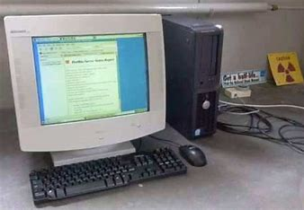
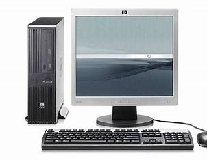

Evolution and History of computers
Pre-computers
First-generation computers

1940s to early 1950s
No OS
wrote pure machine language
users had complete control over the computer
Second-generation computers

1955 to 1965
gmosis was the first os
used a punch card
was made on a single batch processing system
Third-generation computers

1965 to 1980
can multi program
gathers all jobs and submits them
used a punch card
Fourth-generation computers

1980 to pressent day
uses MS-DOS
a number of fourth-generation computers have been released
Fifth-generation computers
used on AI
uses ULSI
can intrerpret graphs and photos
be able to use more than one CPU